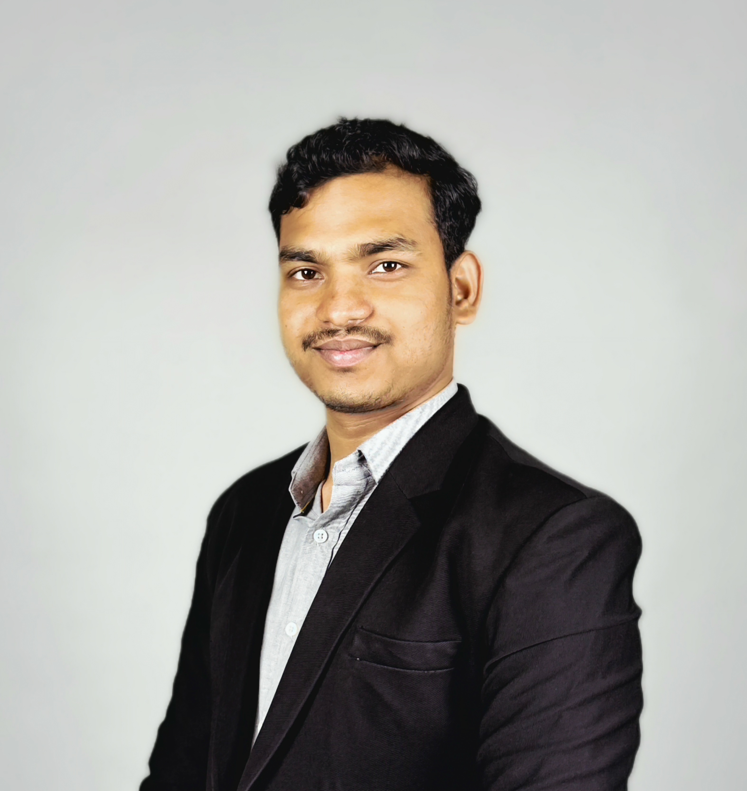

B-Tech CSE (UI/UX).

I am a Computer Science student specializing in UI/UX at Avantika University, combining programming skills with user-centered design to create meaningful digital experiences.
My work integratesprogramming, data structures, user research, and hands-on prototyping to develop solutions that are clear, efficient, and impactful. I focus on building intuitive interfaces supported by reliable system logic, ensuring a strong balance between functionality and user experience.
I am particularly interested in technology that improves education, safety, and everyday usability. Whether designing a responsive portfolio, developing an interactive dashboard, or building an IoT-based safety system, I enjoy transforming ideas into practical solutions and continuously improving each iteration.
What I enjoy working on.
Academic journey.
Currently pursuing Computer Science Engineering and building a foundation in software development, algorithms, and practical implementation.
Completed intermediate studies with a strong focus on academic discipline and consistent problem-solving practice.
Built the early academic base that shaped my interest in computers, logic, and technical learning.